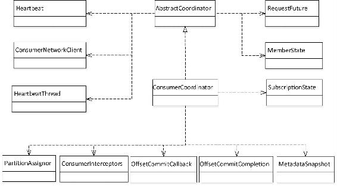
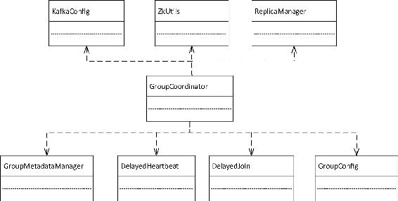
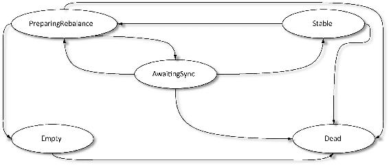
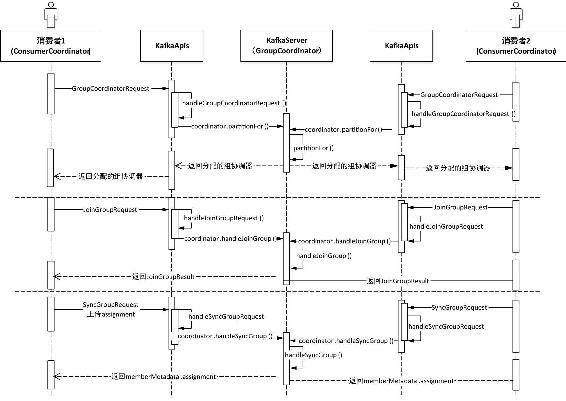

Kafka提供了消费者协调器（ConsumerCoordinator）、组协调器（GroupCoordinator）和任务管理协调器（WorkCoordinator）3种协调器（coordinator）。其中任务管理协调器被Kafka Connect用于对works的管理，本书不进行介绍，我们重点关注的是消费者协调器和组协调器，这两种协调器与消费者密切相关。
Kafka的高级消费者即通过ZooKeeperConsumerConnector实现的消费者是强依赖于ZooKeeper的，每一个消费者启动时都会在ZooKeeper的/consumers/${group.id}/ids上注册消费者的客户端id，即${client.id}，会在该路径以及/brokers/ids路径下注册监听器，用于当代理或是消费者发生变化时，消费者进行平衡操作。由于这种方式是每一个消费者对ZooKeeper路径分别进行监听，当发生平衡操作时，一个消费组下的所有消费者同时会触发平衡操作，而消费者之间并不知道其他消费者平衡操作的结果，这样就可能导致Kafka工作在一个不正确的状态。同时这种方式完全依赖于ZooKeeper，以监听的方式来管理消费者，存在以下两个缺陷。
鉴于旧版高级消费者存在问题，新版消费者进行了重新设计，引入了协调器。对于Kafka引入协调器的发展过程我们不做细化。大家需要知道的是，为了解决消费者依赖ZooKeeper所带来的问题，Kafka在服务端引入了组协调器（GroupCoordinator），每个KafkaServer启动时都会创建一个GroupCoordinator实例，用于管理部分消费组和该消费组下每个消费者的消费偏移量。同时在客户端引入了消费者协调器（ConsumerCoordinator），每个KafkaConsumer实例化时会实例化一个ConsumerCoordinator对象，消费者协调器负责同一个消费组下各消费者与服务端组协调器之间的通信。本节将对这两个协调器的相关职责进行简要介绍。
消费者协调器（ConsumerCoordinator）是KafkaConsumer的一个成员变量，该KafkaConsumer通过消费者协调器与服务端的组协调器进行通信。由于消费者协调器是KafkaConsumer私有的，因此消费者协调器中存储的信息也只有与之对应的消费者可见，不同消费者之间是看不到彼此的消费者协调器中的信息的。其实我们可以简单理解为消费者协调器是消费者执行代理类，它对消费者相关信息进行了封装，同时提供相应方法供消费者调用，消费者很多操作是通过调用消费者协调器相应方法来完成的。然而这并不等同代理类，ConsumerCoordinator继承AbstractCoordinator类，AbstractCoordinator实现了组管理的协议，消费者协调器是消费组管理相关请求的发起者。
消费者协调器负责处理更新消费者缓存的Metadata请求，负责向组协调器发起加入消费组的请求，负责对本消费者加入消费组前、后相应的处理，负责请求离开消费组（如当消费者取消订阅时），还负责向组协调器发送提交消费偏移量的请求。并通过一个心跳检测定时任务来检测组协调器的运行状况，或是让组协调器感知自己的运行状况。同时，Leader消费者的消费者协调器还负责执行分区的分配，当消费者协调器向组协调器请求加入消费组后，组协调器会为同一个组下的消费者选出一个Leader，成为Leader的消费者其ConsumerCoordinator收到的信息与其他消费者有所不同。Leader消费者的ConsumerCoordinator负责消费者与分区的分配，会在请求SyncGroupRequest时将分配结果发送给GroupCoordinator，而非Leader消费者（这里我们将其简称为Follower消费者），Follower消费者向GroupCoordinator发送SyncGroupRequest请求时分区分配结果参数为空，GroupCoordinator会将Leader副本发送过来的分区分配结果再返回给Follower消费者的ConsumerCoodinator。这种处理方式，将分区分配的职责交由客户端自己处理，从而减轻了服务端的负担。
总之，消费者协调器负责消费者与组协调器通信。ConsumerCoordinator底层实现所依赖的组件如图3-11所示。

图3-11 ConsumerCoordinator底层实现所依赖的组件的类图
图3-11展示了消费者协调器底层实现所依赖的主要类，各类作用说明如下。
消费者协调器的相关内容就介绍到这里，它主要负责消费者与组协调器之间的通信，向组协调器提交加入消费组、离开消费组以及提交消费偏移量等请求，并进行相应的处理。
组协调器（GroupCoordinator）负责对其管理的组员提交的相关请求进行处理，这里的组员即消费者。它负责管理与消费者之间建立连接，并从与之连接的消费者之中选出一个消费者作为Leader消费者，Leader消费者负责消费者分区的分配，在SyncGroupRequest请求时发送给组协调器，组协调器会在请求处理后返回响应时下发给其管理的所有消费者。同时，组协调器还管理与之连接的消费者的消费偏移量的提交，将每个消费者消费偏移量保存到Kafka的内部主题当中，并通过心跳检测来检测消费者与自己的连接状态。
每一个KafkaServer启动时都会实例化并启动一个组协调器，每个组协调器负责一部分消费组的管理。从组协调器实例化过程可以看出它依赖的主要组件如图3-12所示。
下面简要介绍组协调器所依赖的组件在GroupCoordinator管理中的具体作用。

图3-12 GroupCoordinator所依赖的组件的类图
表3-6 消费组状态说明
|
状 态 |
状 态 说 明 |
|---|---|
|
PreparingRebalance |
消费组准备进行平衡操作 |
|
AwaitingSync |
等待Leader消费者将分区分配关系发送给组协调器 |
|
Stable |
消费组正常运行状态，心跳检测正常 |
|
Dead |
处于该状态的消费组已没有任何消费者成员，且Metadata信息也已被删除 |
|
Empty |
处于该状态的消费组已没有任何消费者成员，但相应的Metadata没有被删除，直到所有消费者对应的消费偏移量元数据信息（OffsetAndMetadata）过期。若消费组只用于提交偏移量，则也会处于该状态 |
消费组状态机各状态转换关系如图3-13所示。对各状态转换的前置条件本书不展开讲解。

图3-13 消费组状态转换图
以上只是对组协调器依赖的主要组件类进行了简单分析，以便于读者对组协调器的主要功能有一个大致了解，但对于相应的实现细节没有展开讲解。其实，在组协调器启动时也会创建一个定时任务，该定时任务在实例化GroupMetadataManager时被创建，用于定时清理过期的消费组元数据信息及过期的消费偏移量信息。
现在，简要介绍一个新的消费者加入消费组的主要步骤。消费者被创建后通过消费者协调器选择一个负载最小的节点，然后向该节点发送查找组协调器的请求，KafkaApis会对请求进行处理，调用该节点对应的组协调器的partitionFor()方法，GroupCoordinator.partitionFor()方法最终调用GroupMetadataManager.partitionFor()方法，通过请求时指定的groupId，取其hashcode值与Kafka内部主题分区总数取模定位一个分区，该分区的Leader副本所在的节点即为该消费组的组协调器，该消费组的元数据信息以及消费者提交的消费偏移量就会像普通消息一样存储在该分区中。Kafka内部主题默认有50个分区，每个分区有3个副本。
消费者找到组协调器之后就可以申请加入该消费组，即发送JoinGroupRequest请求，KafkaApis最终会调用Group.handleJoinGroup()处理。在Group.handleJoinGroup()方法中依然是调用GroupMetadataManager相应方法完成消费者加入消费组的处理，在对JoinGroupRequest处理时会将该消费者注册到消费组。首先根据groupId信息获取或构造该消费组的GroupMetadata信息，然后将消费者的clientId值与一个UUID值拼接成一个字符串作为该消费者在消费组的memberId值，并构造MemberMetadata信息，再将该MemberMetadata信息注册到GroupMetadata中。GroupMetadata对象中维护了一个Map用于保存当前消费组的成员元数据信息。在消费者注册到消费组时，若该消费组的Leader不存在，则将当前消费者选作当前消费组的Leader消费者，并将该消费者的memberId作为leaderId，同时消费组中的各个消费者通过投票选出各消费者都支持的协议，这里的协议指分区分配策略。最后构造JoinGroupResult对象，回调responseCallback返回给消费者。由此分析可知，JoinGroupRequest处理主要职责是为组成员分配memberId，并将第一个加入组的消费者选为Leader，同时选出一个各消费者都支持的分区分配策略。
在选出Leader消费者后，消费组各成员继续发送SyncGroupRequest请求。Leader消费者会根据同组消费者都支持的分区分配策略，为消费者分配分区，在构造SyncGroupRequest请求时会上传分区分配结果，而Follower消费者在构造SyncGroupRequest请求时该参数为空。组协调器收到请求后一直等Leader消费者的请求处理完毕后再进行回调处理，向该消费组的所有消费者做出响应，在返回响应时会将分区分配结果发送给各消费者。最后将消费者与分区的对应关系写入Kafka内部主题中。
消费者加入消费组与组协调器之间的通信过程简要介绍至此，以上介绍消费者加入消费组的过程省去了相应条件的判断及消费组不同状态的处理。图3-14描述了两个消费者申请入组的过程。需要说明的是，图3-14假设左边的消费者在处理过程中会被选为Leader消费者，同时图3-14并没有反映GroupCoordinator分配的过程。

图3-14 消费者加入消费组的过程
新版的KafkaConsumer将消费偏移量保存到Kafka一个内部主题中，当消费者正常运行或者进行平衡操作时都要向组协调器提交当前的消费偏移量。组协调器负责消费组的管理及消费偏移量的管理，但客户端可以仅选择让组协调器管理消费偏移量，例如，当客户端通过assign()方法订阅指定的分区时，就不用Kafka负责分区的分配。当组协调器收到OffsetCommitRequest请求时，会进行相应的检查判断，若满足偏移量处理的条件时，就会调用GroupCoordinator. doCommitOffsets()方法进行处理。这里所说的偏移量处理的条件有两种情况：一种是该消费组的成员提交的消费偏移量，另一种是仅选择让组协调器负责消费偏移量的管理的消费者提交的请求。若不满足偏移量提交条件就会调用回调函数返回相应的错误码。
在调用GroupCoordinator.doCommitOffsets()方法进行处理时，若是第一种情况，由于需要组协调器管理消费组，所以相比第二种情况多了一步调用GroupCoordinator.completeAnd ScheduleNextHeartbeatExpiration()方法的操作，该方法让延迟的心跳检测执行完成的，更新收到心跳的时间戳，同时再创建一个DelayedHeartbeat，交由DelayedOperationPurgatory管理继续监视下一次心跳。之后两种情况处理逻辑相同，都是调用GroupMetadataManager.prepareStoreOffsets()进行处理，GroupMetadataManager.prepareStoreOffsets()方法主要职责是构造消费者消费偏移量相关的消息，以及封装一个在偏移量对应的消息成功追加到Kafka内部主题之后回调的方法putCacheCallback()。偏移量对应的消息以groupId、主题名、分区编号构成的Struct作为消息的Key，以OffsetAndMetadata相应字段构成消息的Value。经过GroupMetadataManager.prepareStoreOffsets()方法处理后返回一个DelayedStore对象，该对象交由GroupMetadataManager.store()方法处理，在store()方法中调用replicaManager.appendMessages()方法将偏移量追加到Kafka内部主题中，在消息追加成功后会回调putCacheCallback()，在该回调函数中会更新缓存中记录的分区与OffsetAndMetadata的映射信息，并回调responseCallback()方法。